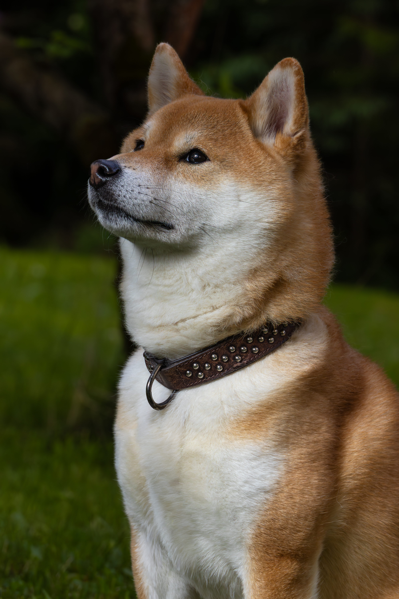
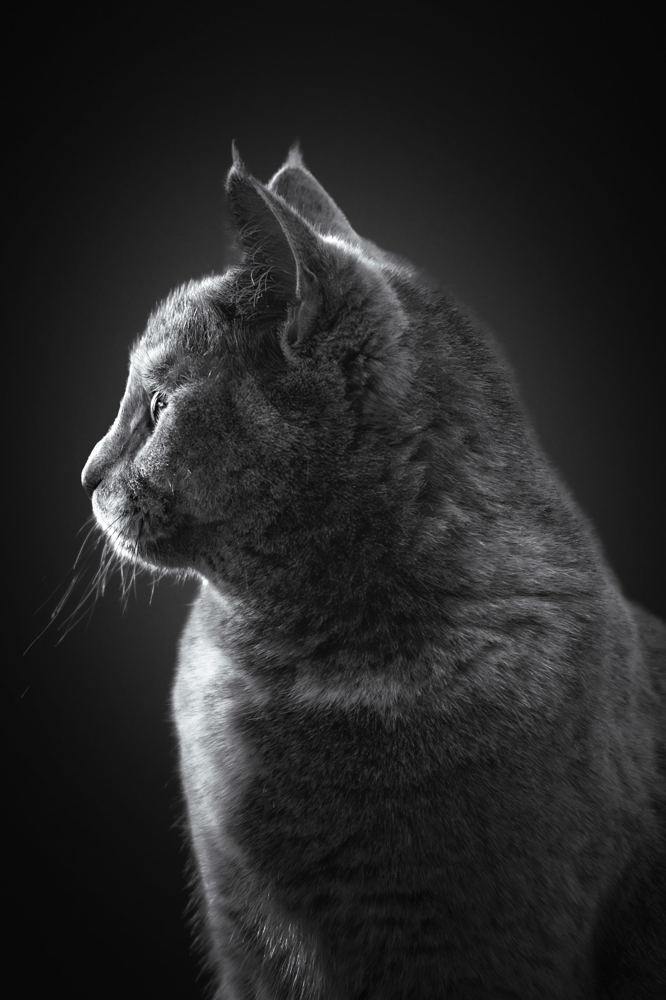

Hundefotografering
Hunder er min tydeligste nisje. Enten du har valp, voksen hund, seniorhund, familiehund eller brukshund, kan vi lage bilder som viser hundens uttrykk og personlighet.
Kjæledyret ditt er ikke bare et dyr. Det er en del av familien. Hos Fotograf Spalder får du naturlige, rolige og personlige bilder som viser uttrykket, personligheten og båndet mellom deg og dyret ditt.
Dyr kan ikke instrueres på samme måte som mennesker. De beveger seg, lukter, lytter, mister fokus og gjør ting på sine egne premisser. Det er nettopp derfor kjæledyrsfotografering krever ro, timing og evne til å lese situasjonen.
Jeg jobber med dyret slik det er. Målet er ikke stive poseringer, men ekte uttrykk, kontakt og bilder som føles levende.
De fleste kjæledyr kan fotograferes, så lenge vi legger opp fotograferingen etter dyrets personlighet, trygghet og energinivå.
Hunder er min tydeligste nisje. Enten du har valp, voksen hund, seniorhund, familiehund eller brukshund, kan vi lage bilder som viser hundens uttrykk og personlighet.
Katter fotograferes best på egne premisser. Ofte fungerer det godt hjemme eller i et kjent miljø der katten føler seg trygg.
Kaniner, hester og andre dyr kan også fotograferes. Ta kontakt, så finner vi en praktisk løsning som passer dyret og situasjonen.
Bruk denne delen til å vise frem dine sterkeste dyrebilder. Bytt gjerne bildefilene under med nye favoritter etter hvert.





En god opplevelse gir bedre bilder. Derfor legger jeg opp fotograferingen på en måte som gjør det enklest mulig for både dyr og eier.
Vi avtaler sted, tidspunkt og hva slags bilder du ønsker. Jeg spør gjerne litt om dyret på forhånd, slik at jeg vet hva vi bør ta hensyn til.
Vi bruker god tid og lar dyret få pauser ved behov. Noen dyr trenger ro, andre trenger aktivitet. Begge deler kan gi gode bilder.
Bildene redigeres og leveres i privat nettgalleri. Der kan du velge inkluderte bilder og eventuelt kjøpe flere.
Dette er en enkel oversikt. Full prisliste og detaljer finner du på prissiden.
Kjæledyrsfotografering kan gjøres ute i naturen, hjemme hos deg eller på en avtalt lokasjon. For mange dyr fungerer det best med et kjent og rolig miljø.
Jeg tar oppdrag i Ringsaker, Brumunddal, Moelv, Hamar, Gjøvik, Lillehammer og resten av Innlandet.
Nei. Mange gode bilder kommer når hunden beveger seg, leker eller følger med på noe. Jeg tilpasser fotograferingen etter dyret.
Ja. Mange ønsker bilder sammen med kjæledyret sitt. Det kan ofte gi sterke og personlige bilder.
Da tar vi det rolig. Jeg legger ikke opp til stress eller press. Målet er at dyret skal føle seg tryggest mulig.
Ved dårlig vær kan fotograferingen flyttes. Det avtales i dialog før oppdraget.
Du får et privat nettgalleri der du kan velge bilder. Noen bilder er inkludert i pakken, og flere bilder eller originalfiler kan kjøpes separat.
Send en forespørsel, så finner vi en løsning som passer for deg og dyret ditt.